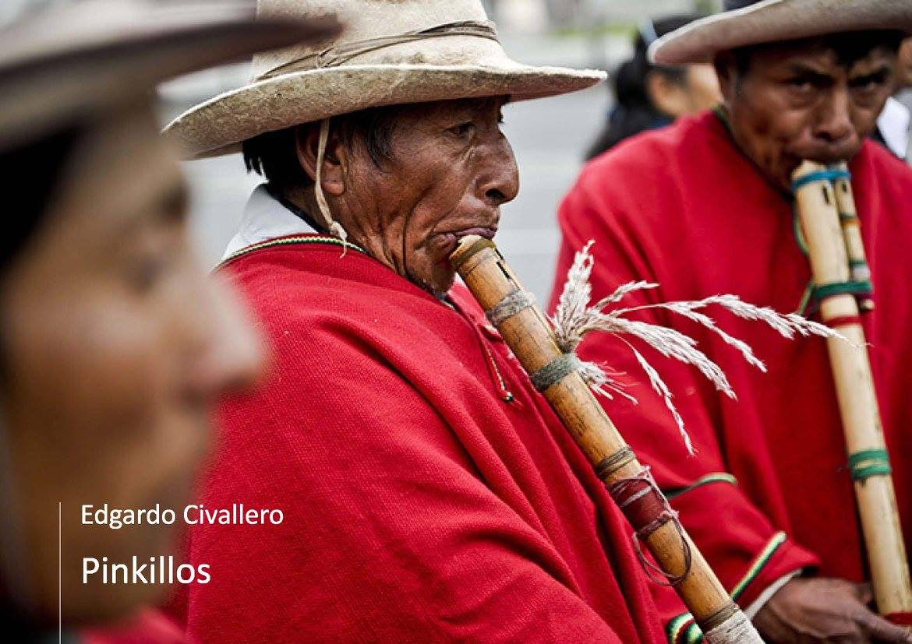

Pinkillos
Inicio > Libros digitales sobre música. Serie 1 > Pinkillos
Cómo citar este trabajo: Civallero, Edgardo (2025). Pinkillos: Un acercamiento inicial. Edición de archivo. Bogotá: El Zorro de Abajo Editora.
Primera edición, 2017. Edición revisada, 2021 (Wayrachaki Editora). Edición de archivo, 2025 (El Zorro de Abajo Editora).
Descargar en PDF.
Este libro ofrece una panorámica excepcionalmente detallada sobre uno de los aerófonos más extendidos y emblemáticos del mundo andino. Se trata de una obra de corte académico y etnoorganológico que combina descripciones técnicas precisas con una lectura histórica, lingüística y ritual del instrumento, mostrando su papel como archivo vivo de la memoria sonora indígena.
El texto define a los pinkillos —también llamados pinquillos, pinkullus, pingullos, pinkuyllus, entre otras variantes— como flautas verticales de canal interno, de un solo tubo abierto, que se interpretan desde Ecuador hasta el norte de Chile y el noroeste argentino. Estos instrumentos se distinguen por poseer un aeroducto interno rígido, característica que los diferencia de las quenas. Se examina la enorme diversidad morfológica y terminológica del género, desde los materiales de construcción (caña, madera, metal, hueso, arcilla, plástico) hasta las variaciones en número y forma de los orificios, el tipo de bisel, la posición de la ventana y las técnicas de digitación. El taco, pieza clave de la embocadura, es objeto de un análisis minucioso, pues determina la identidad acústica de cada ejemplar.
Se refutan las tesis que atribuyen a los pinkillos un origen europeo, argumentando —a partir de evidencia arqueológica— que aerófonos con aeroducto existían ya en América prehispánica, desde Teotihuacan hasta Tiwanaku. Los contactos coloniales influyeron, sin embargo, en la morfología y repertorio del instrumento, generando híbridos locales. Se rastrea el término en fuentes coloniales tempranas: el Vocabulario de Bertonio (1612), el de González Holguín (1608) y la Nueva corónica de Guamán Poma de Ayala (1615), que confirman la antigüedad del vocablo pincullu y su uso general para designar las flautas de pico andinas.
El texto describe la lógica temporal y cosmológica que regula su ejecución: los pinkillos suenan únicamente durante el tiempo de lluvias —el jallu pacha o paray tiempu—, cuando su sonido "llama al agua" y aleja las heladas. Se trata de instrumentos masculinos, asociados a la fertilidad agrícola y a los ciclos vitales.
A partir de ahí, la obra se estructura en dos grandes bloques narrativos que detallan la organología regional. Los grandes pinkillos, de más de un metro, incluyen los pinkuyllus de Cusco y Puno, los lawata de Chinchero, los toro pinkillo y tokoros de Juliaca, y, sobre todo, los mohoseños o moseños del altiplano boliviano, uno de los conjuntos más complejos de la región. Se documenta las tropas de mohoseños con sus diferentes tamaños —salliva, erazo, requinto, tiple— y se explica el uso de tubos auxiliares de soplo (paltjata) que permiten insuflar aire a flautas de hasta dos metros. Estos conjuntos producen armonías de quintas y cuartas aproximadas, cargadas de batimientos, y se interpretan sin percusión de bombo, acompañados por las cajas mohoseñadas.
La segunda parte aborda los pequeños pinkillos, de menos de 80 cm, extendidos a lo largo de toda la cordillera. El texto recorre meticulosamente su geografía: los pingullos ecuatorianos de tres orificios que acompañan al tamboril en festividades como el Corpus Christi y la yumbada de Cotocollao; las flautas peruanas de una mano (roncadoras, pincullos, chisqas, pifas, gaitas) tocadas junto a cajas; las versiones altiplánicas como el lawa k'umu de Puno y los pinkillos ch'alla, taraka, k'achuiri, wayro y karhuani de La Paz. Cada uno de estos instrumentos es descrito con sus nombres vernáculos, dimensiones, materiales, modos de ejecución y contextos rituales.
Particular atención merece el alma pinkillo o muquni, flauta "acodada" tocada durante el Día de Difuntos. Hecha de caña sokhosa, su codo central produce un sonido particular, considerado adecuado para dialogar con las almas de los muertos.
La obra cierra con observaciones sobre la expansión de los pinkillos hacia Chile —en las fiestas de La Tirana y San Pedro de Atacama— y su casi desaparición en el noroeste argentino.
Cada flauta, desde las monumentales sallivas hasta los diminutos pingullos, encarna una relación específica entre cuerpo, paisaje y cosmos. Son instrumentos de conocimiento, mediadores entre los ciclos naturales y las comunidades que aún los hacen resonar.